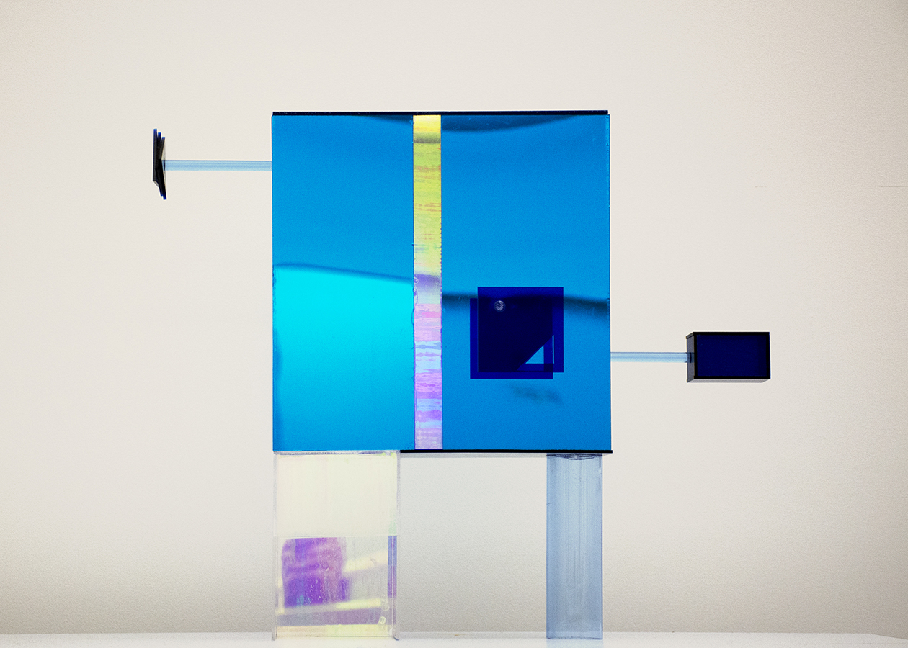
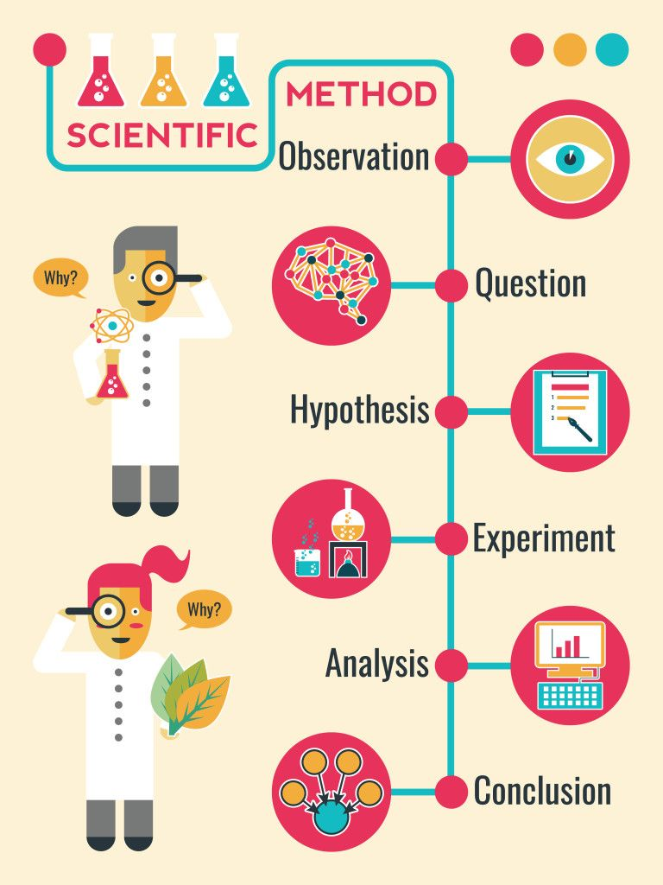
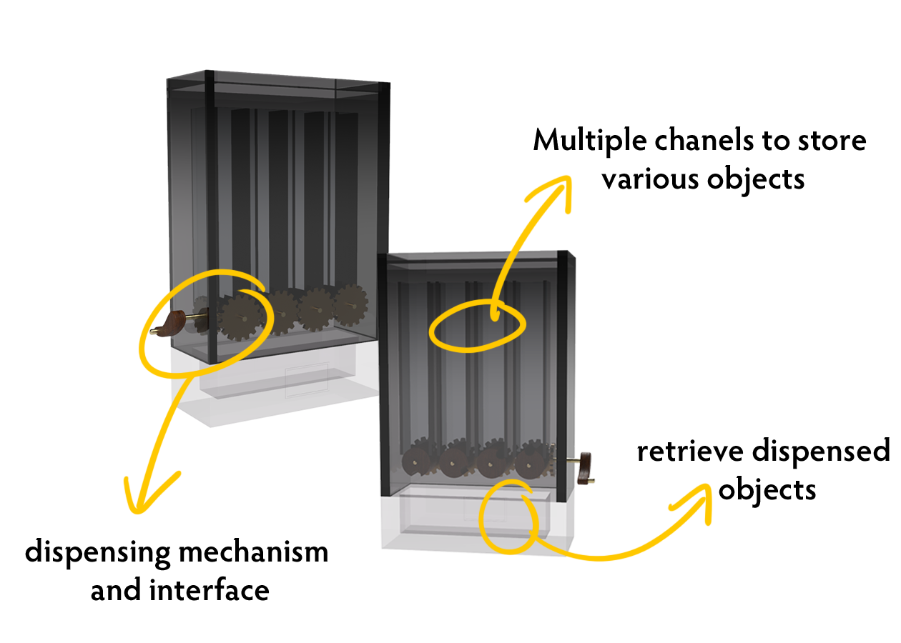
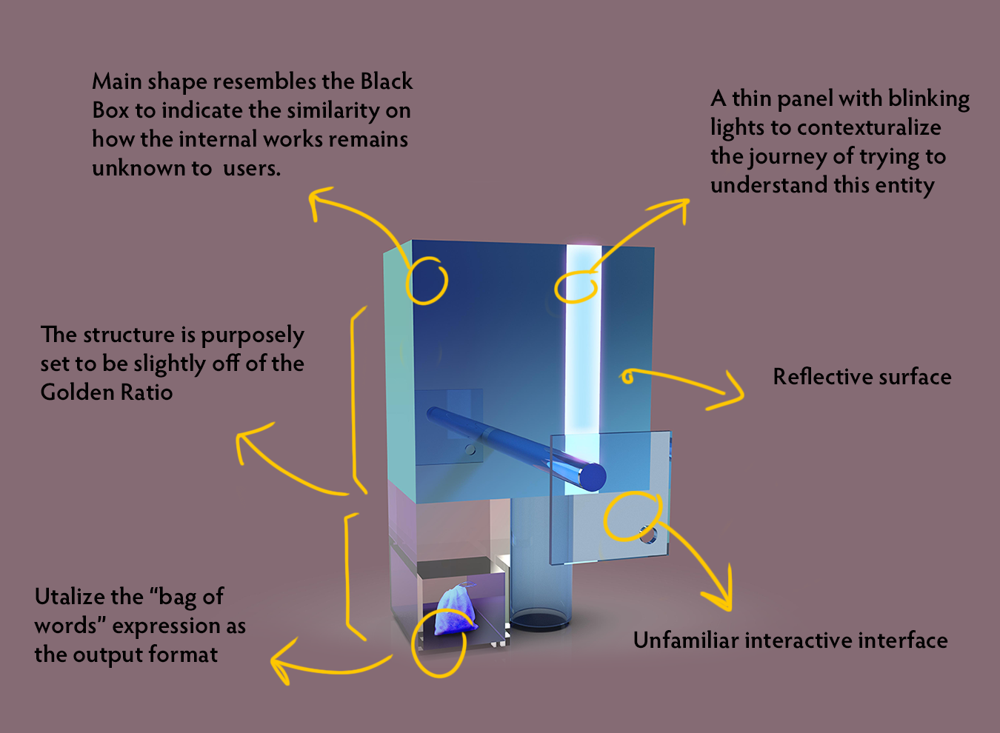

MP is an exploration and experiment on how we understand, or attempt to understand, things beyond our comprehension.
The question is will we ever be able to understand things falls out of our mental model? Things with no signal, no logic, and no pattern. Are we even capable of imagining such entity, or will we forever be trapped in our own framework?
Inspiration
It all started with a conversation with my mother. I was trying to correct her on generalization on something she had said. Then she asked me, "isn't everything you learn and know is from generalizing, just on different scales?"
Her question stuck with me. In a way, she is not wrong. No matter how controled a study or an experiment is, the result or conclusion we get is also a generalization. No matter how big is the testing set, we'll never be able to examine every single incident or entity on the subject we are testing. This has promopted me to question whether the way we explore, discover and learn things is also limiting us because of how our brain works. They way we process things, our logical structure and brain module could be hindering us to only think in one frame work.
Research
I started my research by looking at some of the recent writings and critiques on our current scientif method of experiment, but soon moved on to a more philosophical angle to examine our relation with knowledge and how our mental model limit us to think and behave in certain way.
Rationalism: Rationality is the main source of knowledge and reality has an intrinsically logical structure.
Empiricism: knowledge comes primarily from sensory experience.
By looking at the two main divisions of episitomology, even the views are very far from each other on the surface level. The structure of each side's argument and the logic used to prove the soundness of each argument are still the same. I can't stop to ask myself: "Do we have the ability to understand things/beings beyond our way of thinking? If such being exists, how would be interact with it?"
Goals & Concept
Creating an interactive experience to be incomprehensible, yet not completely meaningless to illustrate the idea of “beyond our thinking". The interactions and experience should have no patterns, no rules, and appear to be confusing and unavailing. The entity M P is named after Modus Ponens, the rule of inference in propositional logic. Which if applied correctly will guarantee a valid argument. However, M P, the entity, on the contrary created by the human mind is trying to defy the very logic pattern it lives in.
Prototype One
Prototype type one focuses on the notion of "paternless". By rolling the handle the users will be recieving random object dipensed by M P.
Prototype Two
The second iteration on MP, I focused on not only the mechanism of the MP, but the appearance as well, and how through its appearance to give meaning to it. Rather than creating a device or entity that have randomized output, I wanted MP to have meaning to both human and itself. What is then, against our intuition, yet remain valuable? Even though MP isn’t focusing on ethics or aesthetics, the ideas of the disconnection from senses and representation became a helpful notion in creating MP. The beauty of having the knowledge of one’s nothingness and being united with the unknown has also influenced the appearance of MP. Implementing these ideas, the second iteration of MP’s main body is made into a box with reflective material. The idea behind it is to illustrate the unknow with the similar look of a black box, where the internal works of it remains unknown . In addition, with the reflective surfaces, the “users” will only see themselves while interacting with MP. The idea behind this is to subtly portray the action of projecting our own thought process and way of thinking to understand an entity or being that does not fall within our framework.
The bottom of the main body is conducted with a transparent half-open box and a transparent tube. The form and exterior of the bottom parts are intentionally made to be confusing. However, they are both made with transparent material to indicate that is it somehow meant for the viewer being able to see the inside. The content that will be dispensed is designed to be in a bag form with various colors. The decision behind that is inspired by the notion “bag-of-words, which is a term frequently used in natural language processing and information retrieval. The “bag-of-words” is a representation of a piece of texts where the grammar and order is lost but only the content and its multiplicity remained in the bag . The bags from MP is then a representation of one of its messages to the viewers. The content within the bag is randomized but filled with human-familiar objects. Borrowing the idea of Uncanny Valley, where the object’s resemblance to a human is very close but not exactly like human, it then creates an unease feelings to the viewers because of its strange yet familiar representation . The goal of MP is not to create disturbing feelings towards its “users”, but in contrary for it to be familiar enough that the “users” feels comfortable and safe to interact, but not too familiar to a degree that causes discomfort or fear. “Users” should be able to feel free to open and examine the bags, if they receive one. However, the form of the MP, and even the process of creating MP is still limited to my ability and imagination as a human being. Therefore, I decided to also stay with the geometric shapes, as it’s consistent with the familiar yet non-human style as the bags.
In terms of the human interaction and input. The second iteration of MP has only one “function”. There is a “handle” looking object extend from MP’s main body. It is design to a cube shape instead of an organic, ergonomic shape or a circle which would indicate its function: turning. By turning the “handle” the “users” will the receive a bag from MP. Moreover, the entire body ratio of MP is created based off of the Golden-Ratio, and then altered to be half of an inch off from that exact measurement. This is also to coherently create the “supposedly familiar yet strange” feeling with all the other parts of the MP.
Physical Mock-ups of Prototype 2:
Prototype Three
On the third version, I added more handles to created total of three handles on MP. Two of them does not function or move. The appearance of each handle still follows the same principle: counterintuitive to what a handle should look or feel like. In addition, the internal structure now will hinder the “user” from getting a bag each time they interact with MP, even if they are using the correct handle. The side has a stopper where it’s difficult to align the handle to the opening of the inner dispensing mechanism without looking. Thus, created an irregularity in its turning-dispensing relationship. This change is made to avoid linear interactions with MP, and its functionality being too close to vending machine based on the suggestions I received. In addition, I also incorporated a light in the front-face of MP’s, where “users” can barely see without paying attention. This was initially added for MP to be more “lively”. It also serves the hope I have in terms of us looking into this black box and hope to one day find the possibility of us “escaping” our own brain.
The show case of MP was, in my opinion, successful. After observing many “users” interacting with MP, I find some interesting interactions. Most people will ask me for explanation if I were present, which I always declined. Fair amount of people are very persistent in getting things from MP once they found the moving handle. Couple people have tried to open MP to see how it works. Questions such as “are some bags harder to open?”, “what’s inside?”, “Am I supposed to do this?”, “I know I’m supposed to get something, am I?” have been asked while I was present.
To end my journey of searching the inconceivable, I want to share what Philosopher John Lock has to say on the query of looking beyond our comprehension:
“Thus men, extending their inquiries beyond their capacities, and letting their thoughts wander into those depths where they can find no sure footing, it is no wonder that they raise questions and multiply disputes, which, never coming to any clear resolution, are proper only to continue and increase their doubts and to confirm them at last in perfect skepticism. Whereas, were the capacities of our understandings well considered, the extent of our knowledge once discovered , and the horizon found, which sets the bounds between the enlightened and dark parts of things, between what is and what is not comprehensible by us; men would, perhaps, with less scruple acquiesce in the avowed ignorance of the one and employ their thoughts and discourse with more advantage and satisfaction in the other” — John Lock